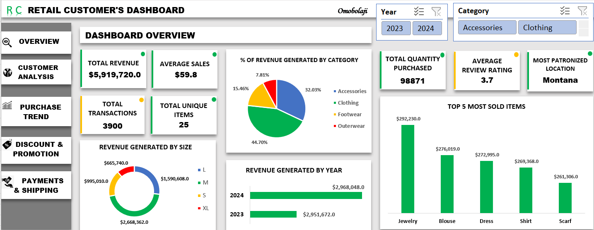

Featured Projects

Retail Customer Dashboard – Comprehensive Sales & Customer Insights
Consolidated revenue, sales, customer segmentation, and product insights for strategic decision-making.
View Project
Profitability & Product Performance Insights
Detailed profitability metrics, product revenue, and profit trends analysis.
View Project
Sales Performance & Market Insights
Sales trends, top products, and revenue breakdown by regions and categories.
View Project